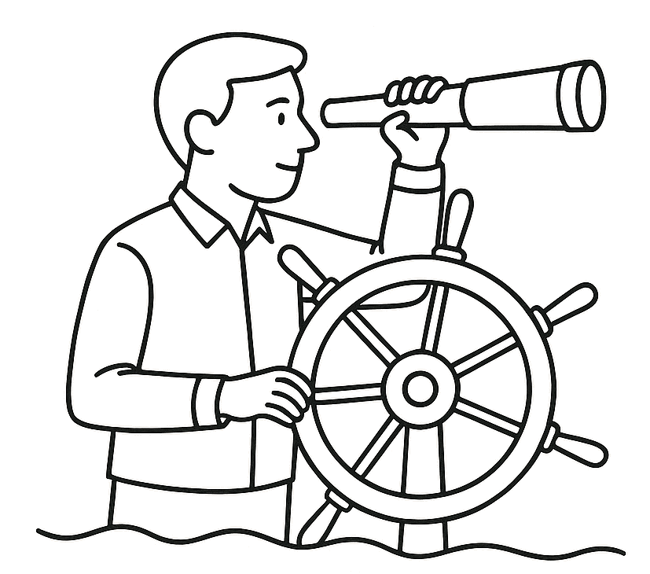

ESPR Product Intelligence
Manage product-level sustainability data, attributes, and regulatory metadata aligned with ESPR.
ESPR · DIGITAL PRODUCT PASSPORT · EUDR

PRISMALIS develops and operates cloud-native platforms that help businesses comply with EU sustainability regulations-through intuitive UIs for small businesses and robust APIs for enterprise integrations.
For over two decades, the team behind PRISMALIS has designed and operated complex digital infrastructures for global organizations, from IoT gateways to capital markets platforms. This experience now powers a new generation of compliance SaaS tailored to the pace and complexity of European regulation.
PRISMALIS builds focused compliance platforms for EU legislation, starting with ESPR and EUDR, with a mission to make regulatory complexity executable through configurable workflows, reusable data models, and automated evidence management.
Modules can be adopted independently or as an integrated compliance backbone.
Manage product-level sustainability data, attributes, and regulatory metadata aligned with ESPR.
Prepare and manage DPP data and distribution workflows, with DPP Service Provider capabilities on the product roadmap as EU interfaces mature.
Centralize due diligence, risk assessment, and statement workflows for commodities and products in scope.
Unify documentation, supplier attestations, geolocation data, and risk scoring in a secure repository.
For ESPR and Digital Product Passports, PRISMALIS is actively contributing to the emerging European DPP ecosystem through participation in the CIRPASS-2 Community of Practice and CEA-List affiliated DPP programmes.
PRISMALIS aims to become a DPP Service Provider via its platform offerings once ESPR/DPP requirements and interoperability interfaces are finalized.
PRISMALIS provides an API-driven validation and submission service to TRACES-NT for EUDR due diligence statements. The service validates payloads and submits electronic Due Diligence Statements into the EU official system.
Guided web workflows, dashboards, and checklists that reduce complexity while keeping teams compliant.
API-first capabilities for integration into ERP, PLM, data platforms, and custom portals.
PRISMALIS' R&D effort is aligned with the most advanced needs identified in recent DPP and ESPR ecosystem work, focusing on functional building blocks that make Digital Product Passports and sustainability data spaces viable at industrial scale. The team works on trust and identity mechanisms, data standardization, product data modeling, interoperability frameworks, and scalable data infrastructures to support long-term deployment across sectors.

PRISMALIS is product-led by design. When needed, advisors support readiness assessments, integration blueprints, and cross-functional programme alignment-without creating long-term consulting dependency.
Choose the path that matches your current priority.
Or email us directly:
Compliance and platform discussions: compliance@prismalis.com
General and partnerships: contact@prismalis.com